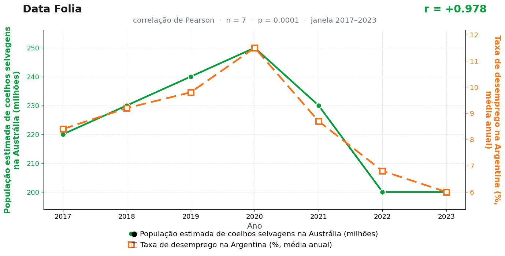

Post de 28/09/2026

A teoria
O mecanismo começa no outback. Coelhos em expansão pressionam plantações, pastagens e rotas de abastecimento; esse movimento altera a leitura de risco de quem acompanha alimentos, câmbio e demanda regional.
A Argentina recebe esse sinal com atraso e intensidade. O empresário local lê a notícia rural distante como aviso de instabilidade no preço dos insumos e segura decisões de contratação até o ambiente ficar mais claro.
Por isso os coelhos australianos entram na história como uma espécie de sinal de alerta. Eles correm longe de Buenos Aires, mas carregam no salto a mensagem que depois aparece nas entrevistas, nos cafés e nas mesas de recursos humanos.
A embaixada argentina em Camberra não mantém adido coelheiro — por enquanto. Nosso ofício sugerindo a criação do cargo segue sem resposta, o que atribuímos ao correio, jamais ao mérito.
A teoria é ficção; a correlação é real: r = 0,98 (n = 7, p < 0,001).
Os dados por trás

- População estimada de coelhos selvagens na Austrália (milhões) — 7 pontos anuais, período 2017–2023. Fonte: CSIRO / Department of Agriculture (estimativas).
- Taxa de desemprego na Argentina (%, média anual) — 7 pontos anuais, período 2017–2023. Fonte: World Bank / INDEC.
Como as correlações deste site são encontradas — e por que você não deve confiar nelas — está explicado na nossa metodologia.
Por que isso acontece?
As duas séries têm, por coincidência, o mesmo desenho: sobem até 2020 e caem depois. O desemprego argentino subiu com a crise e o choque da pandemia (pico de 11,5% em 2020) e recuou em seguida; a estimativa de coelhos australianos sobe até 250 milhões em 2020 e depois desce. Formas parecidas por motivos completamente independentes — é disso que o coeficiente de Pearson se alimenta, e ele não pergunta o motivo de nada.
Olhe os valores dos coelhos: 220, 230, 240, 250, 230, 200, 200. Números redondos demais para serem contagem — são estimativas suavizadas de órgãos técnicos. Séries suavizadas carregam menos ruído que o fenômeno real e, com apenas 7 pontos, qualquer coincidência de formato vira r = 0,98.
A regra que este post ilustra: duas curvas com uma única "corcova" na mesma posição sempre parecerão gêmeas para a correlação linear. Uma corcova é um evento (pandemia); a outra é uma revisão de estimativa. O gráfico não distingue — quem precisa distinguir é o leitor.
Post de 28/09/2026 · publicado também no Instagram @datafolia.